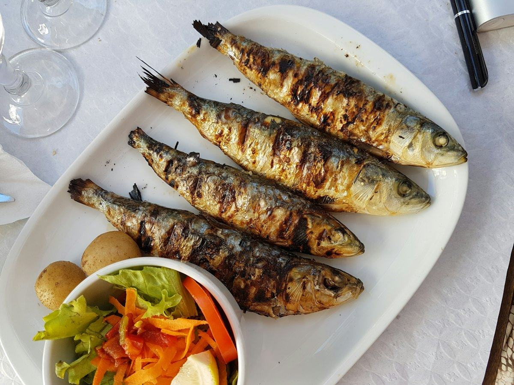
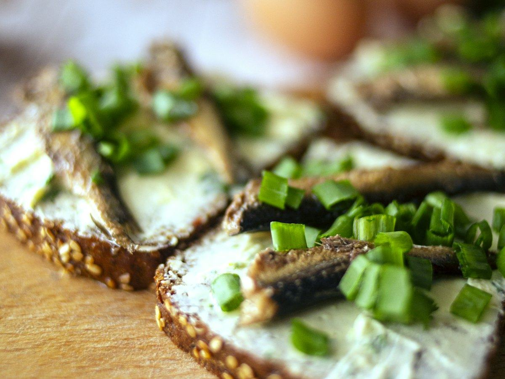
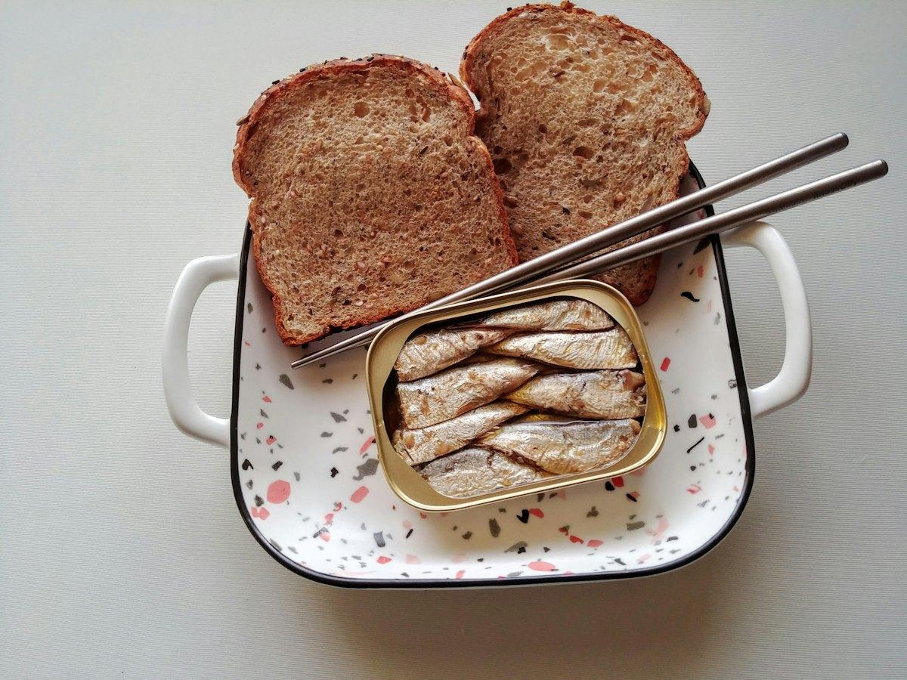
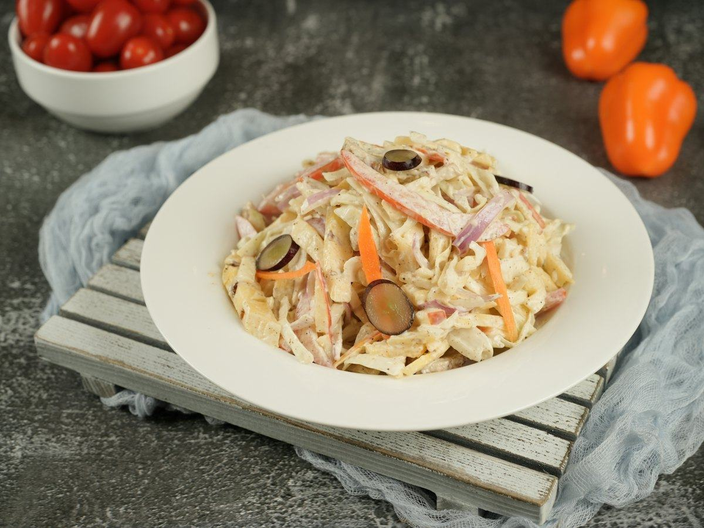

Recetas
3 recetas de salmón fáciles y saludables: al horno, en papillote y en ensalada
Salmón al horno con espárragos, en papillote con verduras y en ensalada con aguacate. Recetas fáciles con calorías, proteínas, hidratos y grasas por ración.
 Por el equipo editorial de Pombo AI
Por el equipo editorial de Pombo AI
12 nov 2026 · 6 min de lectura

Las sardinas son uno de los pescados azules más baratos y en lata duran meses en la despensa. Aquí tienes tres recetas para sacarles partido, con su tabla nutricional.

Una cena en cinco minutos con una lata de sardinas, pan integral y un poco de verdura.
| Proteínas | 31 g | 33 % |
|---|---|---|
| Hidratos de carbono | 34 g | 36 % |
| Grasas | 12 g | 31 % |
| Fibra | 5 g |
El % indica de dónde viene la energía del plato.
Proteína del pescado y del pan, con la grasa propia del pescado azul. Al estar escurridas, la mayor parte del aceite de la lata se queda fuera.

Una ensalada de verano muy completa: patata, pescado azul y huevo.
| Proteínas | 32 g | 27 % |
|---|---|---|
| Hidratos de carbono | 41 g | 34 % |
| Grasas | 20 g | 39 % |
| Fibra | 6 g |
El % indica de dónde viene la energía del plato.
Un plato único con hidratos de la patata y mucha proteína del pescado y el huevo. Ideal para llevar en táper.

Un recurso de despensa: pasta, una lata de sardinas en tomate y un sofrito rápido.
| Proteínas | 31 g | 25 % |
|---|---|---|
| Hidratos de carbono | 54 g | 43 % |
| Grasas | 18 g | 32 % |
| Fibra | 8 g |
El % indica de dónde viene la energía del plato.
Hidratos de la pasta integral para tener energía y proteína del pescado azul. Un plato barato que se hace con lo que hay en la despensa.
Cómo calculamos los valores: sumamos los ingredientes con la base pública del USDA (FoodData Central, SR Legacy) y dividimos entre las raciones. Son aproximaciones: cambian según la marca, el tamaño y la cocción. Los sellos "fuente de" y "alta en" siguen los criterios del Reglamento (CE) 1924/2006. Para saber lo que comes de verdad, haz una foto a tu plato con Pombo AI.
¿Prefieres sardinas frescas a la brasa? Asegúrate de cocinarlas bien: lee cómo evitar el anisakis.
¿Cuánto comes de verdad?
Con Pombo AI haces una foto a tu plato y la inteligencia artificial estima calorías, proteínas, hidratos y grasas en segundos. Es una estimación orientativa, no un dato médico.
Son pescado azul igualmente y una forma práctica de comerlo. Para reducir la grasa del aceite, escúrrelas bien.
La AESAN propone 3 o más raciones de pescado a la semana, priorizando el pescado azul, como la sardina.
Aviso: Este artículo es informativo y no sustituye el consejo de un médico o dietista-nutricionista. Si tienes una enfermedad, tomas medicación, estás embarazada o has tenido un trastorno de la conducta alimentaria, consulta con un profesional antes de cambiar tu alimentación.
Salmón al horno con espárragos, en papillote con verduras y en ensalada con aguacate. Recetas fáciles con calorías, proteínas, hidratos y grasas por ración.
Merluza a la gallega, al horno con pimientos y a la plancha con verduras. Tres recetas de pescado blanco con su información nutricional.
Ensalada de pasta integral con atún, tostada de atún y aguacate y tomates rellenos. Recetas fáciles con su información nutricional.